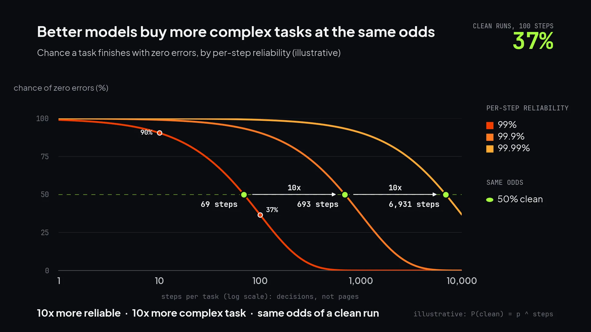

Opus 5.5 is a big upgrade over 4.8. (No lie: I skipped 5 entirely.) It debuted at number one on the Artificial Analysis Intelligence Index, five points ahead of GPT-6 Astra and Fable 5.1. Despite all of that, it still makes mistakes every time I use it. I know this because any time I have Opus do a meaningful chunk of work, I run it through an adversarial review. A second model, from a different lab, reads the work in a fresh session and tries to break it. These days that reviewer is DeepSeek v4.1 Flash, and it usually costs about a penny per round of review.
On almost every significant piece of work, the DeepSeek reviewer finds something serious. In almost every case Opus agrees with the finding and fixes it. So while weaker models are prone to hallucinations, I'm quite confident these are real because Opus is acking them. Real errors, consistently delivered in frontier output, caught for pocket change.
An assumption of our education system is that when you do the work yourself, you understand it as you build it. Our new hope as we shift to AI doing much of the work is that we understand it as we review it. Unfortunately, today plenty of work in circulation is neither written nor reviewed by anybody. Werner Vogels calls the gap verification debt. Each unreviewed error is a latent liability. It's already in the work. It just hasn't surfaced yet.
The next model drop won't fix it
Models are becoming more powerful at an astounding rate. It's tempting to think that each release will shrink the problem until errors are rare enough to ignore. That utopian moment seems to be far in our future.
Whether a piece of work comes out clean depends on two things: how often the model makes an error at any given step, and how many individual steps the work takes. Here, the number of steps isn't always driven by the length of the work, but rather by the complexity of the work and the number of micro-decisions that the model must make. A two-page brief might sit on top of reams of research, analysis, and synthesis. Better models lower the error rate. At the same time, our ambition extends the horizon of work and increases the complexity.
Take the industry's favorite progress metric: METR's task-horizon research. This measure shows how long a task, in skilled human time, each new model can complete. It finds that the horizon is doubling about every seven months. That's exponential improvement: roughly 3x a year, 10x every two years. Pundits cite those horizons like gospel. I suspect few of them know that the horizon is measured at 50% reliability. This means that the given model will complete a task of that complexity correctly half the time. A literal coin flip. In practice, this is exactly how we use the models. Our appetite for 'more' outweighs our patience for 'better'.
The arithmetic shows why that matters. If a model gets each step right 99% of the time, a 10-step task comes out clean about nine times in ten. A 100-step task comes out clean only about one time in three. Every gain in reliability buys a more complex task at the same odds. And we keep choosing the more complex task.

There's a second limit. Even putting errors aside, some of what a reviewer flags comes from guesses the builder made about things nobody specified: who the audience is, which constraint matters, what 'done' means. A more capable model doesn't close those gaps. It just fills them with more confident guesses.
Code is the best case, and it's still full of latent errors
Coding is at the frontier of applied AI, and for good reason. Today, writing code is what these models do best, and code is unusual in how much of its quality a machine can check. Compilers reject what doesn't parse. Tests confirm behavior. Static analysis catches whole classes of bugs, vulnerabilities, and maintainability problems before the software ever runs. A machine may not be able to tell you whether the code does what the business actually needs, but it can check most of the rest. Decades of engineering discipline sit on top of those checks: review as a norm, pipelines that block a bad merge, an ecosystem built around code quality. AI raises the stakes on all of it, because teams now ship far more code than anyone has the time or attention to read line-by-line.
Even against this backdrop, the foundation is showing cracks. Code that everyone assumed was hardened and clean for decades has started to wilt under the scrutiny of frontier models like Mythos and increasingly capable open-weight models like GLM 5.3. Serious vulnerabilities have been found across every major operating system and browser, many of them lying dormant in the code for 10 or even 20 years. Decades of expert review missed them. The errors were there all along. The instruments of scrutiny have gotten better. This does not bode well for the nearly 50% of code that is fully generated by AI.
I don't build real software, but like any good vibe coder I have written more code this year than I have since university. Claude is a much better coder than me, so I have neither the desire nor capacity to review it all line-by-line. So I had Claude build my own review loop as a script and skill pack: first Claude writes, then calls another model to review inside the loop, then iterates until the review comes back clean. A fairly simple approach. To validate it, I turned the loop back on itself. Opus said it was done and ready to ship. DeepSeek disagreed. It took six rounds and 26 unique fixes before the review loop converged. Many of these new issues actually emerged as a result of Opus fixing a previously flagged issue.
Most knowledge work has no automated verification
Step outside code and the rigorous verification regimes evaporate. A strategy memo doesn't compile. A research report has no test suite. A marketing plan has no linter. We never built much automated validation for strategy and knowledge work because we expected the person who wrote it to deeply understand it.
Now that expectation is violated. A growing share of work is produced by AI, and a declining share of work is carefully reviewed before it's sent off to a colleague or customer. Here be errors: a market size resting on an assumption nobody stated, a statistic with no source behind it, a claim about a competitor nobody verified, a fact invented from whole cloth by matrix math rounded off into words. All of it a probability distribution with no sense of objective truth. Code keeps its liabilities on the books, in failing tests, open issues, and analyzer reports. Knowledge work keeps all of the debt off the balance sheet. It only surfaces later when someone downstream trips over it.
Sometimes this happens in public. Deloitte refunded the Australian government for a report containing a fabricated quote and references to papers that don't exist. More often, the errors compound in silence. An invented number in a research brief becomes an input to the strategy memo. Then a line in the board deck. Then a talking point in the press release. Then a ticking clock waiting to be cited in a lawsuit. Each step adds unearned confidence and strips away the audit trail back to the source. This is the dreaded workslop: output that looks finished but shifts the real labor onto whoever receives it. By the time someone catches the error, it has propagated into everything built on top of it.
A model made the problem, use a different model to catch it
The obvious move is to ask the model to check its own work. Prompt engineering hilarity ensues: 'Make no mistakes.' If that worked, it would already be in every system prompt. Spoiler: it isn't, because it doesn't. Research on self-correction finds that models struggle to spot their own reasoning errors. They also rate their own output more favorably than output from another model. A reviewer that's a carbon copy of the builder, working in an identical context, inherits all of the builder's assumptions, blind spots, and defects.
What works is independence, and it's why my review loop is built the way it is: the reviewer starts a fresh session with none of the builder's context, runs a model from a different lab, and gets a prompt that asks it to disagree. Research shows that each model has its own characteristic blind spots, so a second model is uniquely capable of catching what the first couldn't see.
AI was supposed to make our lives easier, right? This sounds complicated and slow and expensive. It's not. My review skill covers code, analysis, writing, and more. Claude can run it without a single manual keystroke from me. The six-round run above cost less than six cents in OpenRouter calls. Yes, there are more moving parts, but it runs iteratively as a loop inside the build and burns down the issue list until everything checks out. It's no more work for me. I never read the original reasoning traces from Opus. By the same token, I never read these rounds of review from DeepSeek. I scan the summary and mediate a disagreement between models if needed.
At the end of the day, the only thing this costs is compute. That's not nothing, but, all things being equal, if you weigh a handful of additional tokens spent on generation against a handful of tokens spent on review, the calculus is clear: put your money on review.
Review catches errors. Rules stop them from recurring.
A review loop fixes the work in front of it. On its own, it doesn't improve the work that comes next.
In my experience, most findings are one-off slips: a wrong number, a broken reference, or a hallucinated dependency. Fix them for cheap and move on. But some findings are systemic: an error that keeps recurring, or a gap in the spec where the builder had to guess at a requirement nobody wrote down. Those must become rules, approved by a person, that continuously update the instructions that define the next piece of work.
This is where the math starts working in your favor. Errors compound as tasks get more complex. Rules compound too, because every rule narrows the set of systemic errors the model might make and improves the ability of the reviewer to catch anything that slips through. Software teams are starting to build factories: closed-loop systems that are engineered instead of prompted. Knowledge workers need to be building factories of their own where review stops being a cost paid on each piece of work and starts being part of the machinery that produces it. Build that and you'll get bigger tasks and less slop.
Personally, I'm a bit nonplussed about all of the Pangram-fueled AI shaming. You should be using AI in your work. But if you are, you should be able to answer this question: when a mistake gets made, who catches it? If the honest answer today is that it's your customer, the liability has already come due.
Drafted with Claude Opus 5.5 · Reviewed by DeepSeek v4.1 Flash · Shaped by my long-form-essay-voice skill · Header image generated in Google Imagen 3